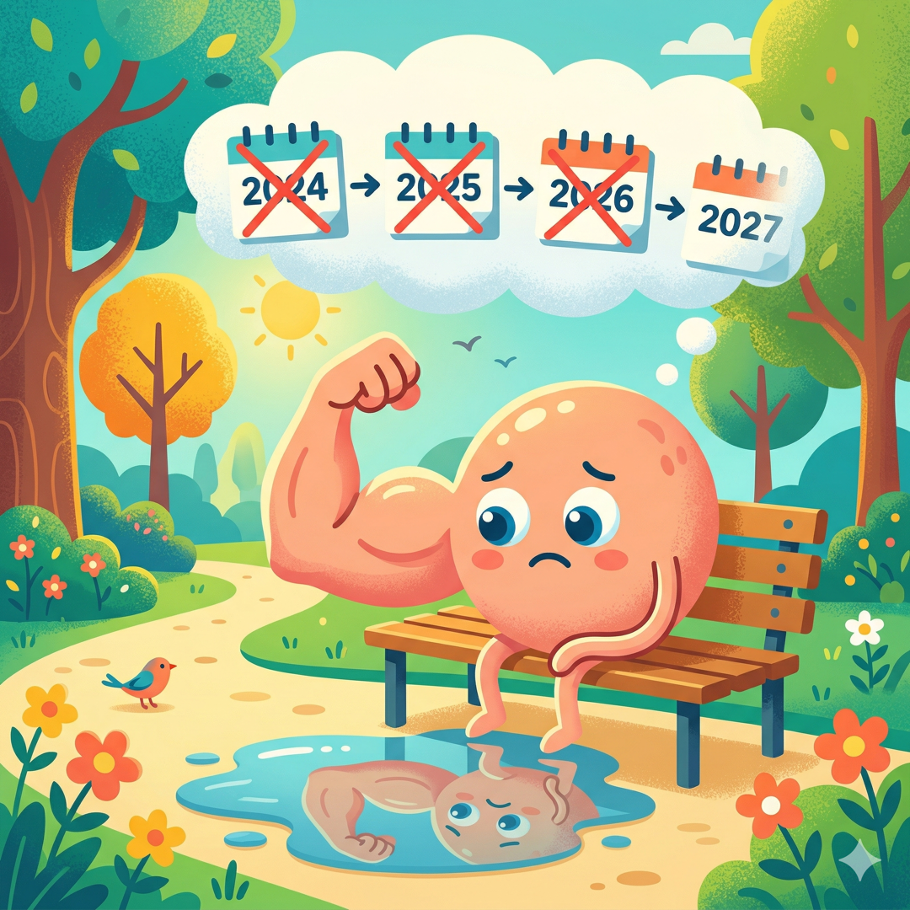
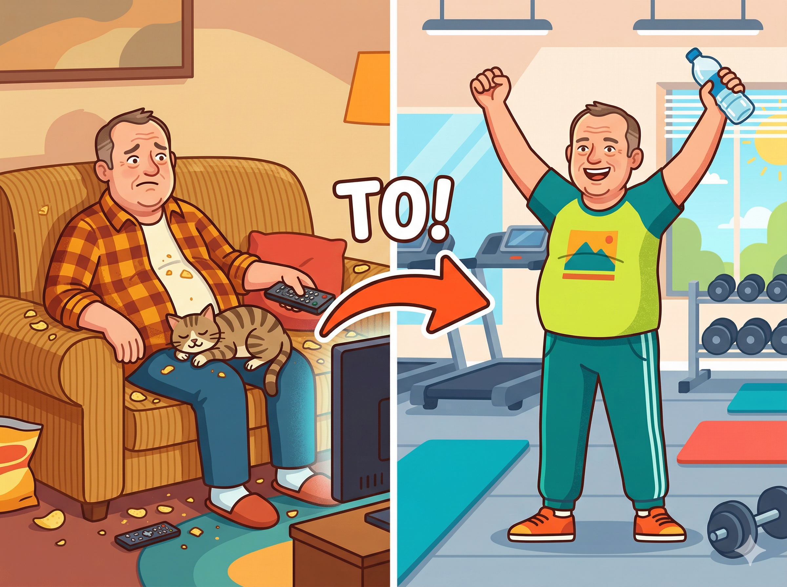
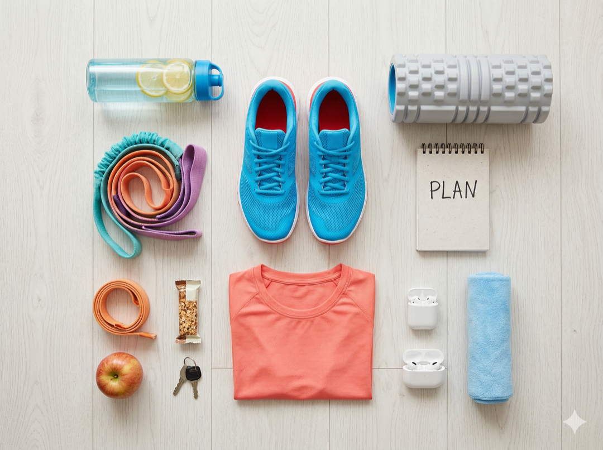

Hej, mówię Wam szczerze – kiedy skończyłem 50 lat i wyjrzałem w lustro, nie byłem z siebie za bardzo dumny. Kilogramy się zebrały, kondycja gdzieś uciekła, wchodzenie po schodach bez zadyszki stało się marzeniem, a założenie skarpetki na stojąco na jednej nodze to porażka. Znacie to uczucie? Spoko, jesteście w dobrym miejscu. Właśnie dlatego napisałem ten artykuł – żebyś wiedział dokładnie, jak ruszyć tyłek i zacząć, bez głupich błędów, bez kontuzji i bez obciachu. Zrobię to razem z Tobą, krok po kroku. Czytaj dalej, bo to może być najlepsze, co zrobisz dla siebie w tym roku.
KROK 1: MOTYWACJA – CZYLI DLACZEGO W OGÓLE MAM TO ROBIĆ?
Zacznijmy od najważniejszej rzeczy – od głowy. Bo wiesz co? Możesz mieć najlepszy plan treningowy na świecie, najdroższe buty i karnet w najtrendowniejszej siłowni w mieście, ale jeśli nie masz mocnego DLACZEGO – to i tak odpuścisz po tygodniu.
Znajdź swoje własne DLACZEGO
Siądź sobie spokojnie, weź kawę (bez cukru, ale do tego dojdziemy) i napisz na kartce lub w telefonie, dlaczego chcesz wrócić do formy. Nie pisz 'bo powinienem' – to za mało. Pisz konkretnie:
- Chcę bawić się z wnukami bez zadyszki
- Chcę znowu wejść w te spodnie, co leżą od 3 lat na półce
- Chcę żyć dłużej i zdrowiej – mam plany i nie zamierzam rezygnować
- Chcę czuć się dobrze we własnej skórze, kiedy wchodzę na plażę
- Chcę mieć energię wieczorami, a nie padać o 20:00
To są PRAWDZIWE powody. I wiesz co? Mówię CI – zapisz to i wróć do tej kartki za każdym razem, kiedy nie będzie Ci się chciało wyjść z domu.
Zmień nastawienie – to nie kara, to nagroda
Wiem, wiem – siłownia brzmi jak tortura. Ale posłuchaj: każdy trening to coś, co DAJESZ swojemu ciału, nie coś, co mu ZABIERASZ. To inwestycja, nie poświęcenie. Po 50-tce aktywność fizyczna to nie fanaberia – to konieczność, żeby cieszyć się życiem w pełni.
✅ Badania pokazują, że już kilka tygodni regularnego treningu radykalnie poprawia samopoczucie, jakość snu i poziom energii. To coś, co poczujesz na własnej skórze naprawdę szybko.
Ustaw cel realistycznie – bez szaleństw na start
Mówię Wam wprost: nie będziesz wyglądał jak Stallone po 3 miesiącach. Ale za to po 3 miesiącach możesz wejść bez zadyszki na 4. piętro, wstać rano bez bólu pleców i poczuć, że żyjesz, a nie tylko egzystujesz. To jest właśnie prawdziwy cel na start. Małe cele, wielkie zmiany.


Każdy trening to coś, co DAJESZ swojemu ciału, nie coś, co mu ZABIERASZ. To inwestycja, nie poświęcenie. Po 50-tce aktywność fizyczna to nie fanaberia – to konieczność, żeby cieszyć się życiem w pełni.
KROK 2: NAJPIERW BADANIA – BEZ TEGO ANI RUSZ!
Słuchajcie – i tu jestem z Wami absolutnie poważny. Zanim zrobisz pierwszy wykrok na siłownię, MUSISZ pójść do lekarza. Wiem, że to ostatnia rzecz, na którą masz ochotę, ale to podstawa i absolutnie nie wolno tego pomijać. Po 50-tce organizm nie jest taki sam jak w 20-tce, i to jest fakt. Są jakieś programy w Centrach Medycznych specjalnie pod sport. Koszt nie przewyższa kupna nowej koszulki.
Dlaczego badania są obowiązkowe?
Serce i układ krążenia są szczególnie narażone podczas wysiłku fizycznego po długiej przerwie. Niektórzy uważają się za zdrowych, a potem okazuje się, że mają nadciśnienie, które wcześniej nie dawało objawów, albo poziom cukru jest za wysoki, co zmienia dobór ćwiczeń. Lepiej to wiedzieć PRZED niż dowiedzieć się na bieżni.
Lista badań, które musisz zrobić
Badania podstawowe (absolutne minimum):
- Morfologia krwi z rozmazem – żebyś wiedział, czy nie masz anemii, stanów zapalnych, problemów z krwią
- Glukoza na czczo – wykrycie cukrzycy lub stanu przedcukrzycowego, co zmienia plan treningowy
- Profil lipidowy (cholesterol, HDL, LDL, trójglicerydy) – ważny dla zdrowia serca
- Kwas moczowy – jeśli miewałeś bóle stawów, to obowiązkowe
- TSH (tarczyca) – niedoczynność tarczycy to złodziej energii, sprawdź koniecznie
- Badanie moczu ogólne – kontrola nerek i dróg moczowych
- Ciśnienie tętnicze – zmierz i powtarzaj regularnie
Badania serca – bardzo ważne po 50-tce:
- EKG spoczynkowe – podstawowe badanie serca, koniecznie przed intensywnym treningiem
- EKG wysiłkowe (test na bieżni) – jeśli lekarz zdecyduje, że jest wskazany – pozwala sprawdzić serce pod obciążeniem
- ECHO serca – jeśli masz historię chorób serca w rodzinie lub podwyższone ciśnienie
Układ ruchu – szczególnie jeśli bolą stawy:
- Konsultacja ortopedyczna – jeśli masz bóle kolan, bioder, kręgosłupa, to obowiązek
- USG stawów – sprawdzenie stanu chrząstek, więzadeł, łąkotek
- Ocena postawy i zakresu ruchomości – najlepiej u fizjoterapeuty
Dodatkowe – dla kompletnego obrazu:
- Hormony (testosteron u mężczyzn, estrogen u kobiet) – po 50-tce hormony mocno wpływają na efekty treningowe
- Witamina D3 – niedobory są bardzo powszechne i wpływają na mięśnie i kości
- Magnez i żelazo – przy zmęczeniu i skurczach
✅ Powiedz lekarzowi, że planujesz zacząć regularnie trenować na siłowni – on sam zaproponuje odpowiednie badania do Twojej sytuacji.
⚠️ Nie lekceważ wyników! Jeśli cokolwiek odbiega od normy, skonsultuj z lekarzem, jak dostosować trening. To nie jest koniec świata – to tylko punkt startowy.

Absolutne minimum przed treningiem: morfologia, glukoza, profil lipidowy, kwas moczowy, TSH, badanie moczu, ciśnienie tętnicze, EKG spoczynkowe. Koszt nie przewyższa kupna nowej koszulki.
KROK 3: ZAKUPY – ZAINWESTUJ W SIEBIE, BO TO SIĘ OPŁACA! & KROK 4: WYBÓR SIŁOWNI I KARNETU – TO MA ZNACZENIE!
A teraz coś, co lubię najbardziej – zakupy! I mówię Wam – to nie jest błahostka. Kiedy zakładasz porządny strój, w którym dobrze wyglądasz i dobrze się czujesz, to zupełnie inaczej idziesz na trening. To psychologia, nie wymówka. Dobry sprzęt też naprawdę pomaga.
🛍️ BUTY – nie oszczędzaj! Mówię Wam serio – buty to ważna inwestycja. Po 50-tce stawy są wrażliwsze i zła amortyzacja to prosta droga do kontuzji. Nie kupuj 'czegoś z szafy' ani przypadkowych trampek. Buty treningowe to osobna kategoria – zaprojektowana właśnie do tego.
Jakie buty wybrać na siłownię? Wszystko zależy od tego, co będziesz robić:
- Do treningu siłowego (maszyny, wolne ciężary): Potrzebujesz butów z PŁASKĄ, TWARDĄ podeszwą i dobrą stabilizacją boczną. Dobra amortyzacja tu nie pomaga – wręcz przeszkadza, bo odbiera czucie gruntu przy podnoszeniu ciężarów. Szukaj modeli: Nike Metcon, adidas Powerlift, Reebok Nano, New Balance Minimus – to bestsellerowe modele do siłowni. Ja uwielbiam buty płaskie, bez dropa więc Nike Free Run dla mnie są idealne. Najczęściej widzę ludzi jednak w Metconach
- Do cardio (bieżnia, orbitrek, rower): Tu potrzebujesz dobrej AMORTYZACJI, żeby chronić kolana i biodra. Sprawdzą się: Nike Air, Asics Gel, adidas Cloudfoam, New Balance Fresh Foam. Te technologie realnie chronią stawy – po 50-tce to nie jest luksus, to konieczność.
- Uniwersalne (i siłownia, i cardio): Najlepszy wybór na start to buty do treningu ogólnego, które sprawdzą się w obu sytuacjach. Polecam: Nike Free Metcon, Under Armour Tribase, New Balance 608.
✅ Idź do sklepu i PRZYMIERZ buty z tymi samymi skarpetami, w których będziesz trenować. Nigdy nie kupuj butów sportowych online bez wcześniejszego sprawdzenia rozmiaru w sklepie stacjonarnym! Uwaga, skarpety też ważne. Najlepiej kupić jakieś do biegania, będą ok do wszystkiego na siłowni.
⚠️ Nie kupuj butów biegowych do treningu siłowego – zbyt miękka podeszwa przy podnoszeniu ciężarów jest niebezpieczna i zwiększa ryzyko kontuzji.
👕 ODZIEŻ TRENINGOWA – w czym dobrze się czuć
Zapomnij o starej koszulce od pijamy i dresach z hipermarketu. Serio. Dobra odzież treningowa to nie snobizm – to komfort, który sprawia, że chce Ci się trenować. A kiedy dobrze wyglądasz w lustrze siłowni, masz więcej motywacji. Psychologia działa!
Co kupić na start:
- KOSZULKI / T-SHIRTY: Szukaj materiałów z technologią odprowadzania wilgoci (Dri-FIT Nike, Climalite adidas, HeatGear Under Armour). Bawełna NIC – moknie, przykleja się do ciała i jest niekomfortowa przy wysiłku. Kolor i krój – Twój wybór. Ważne, żebyś czuł się dobrze i pewnie. Ja mówię: zainwestuj w coś, co naprawdę lubisz. Marki: Nike, adidas, Under Armour, Reebok, 4F (polskie, tańsze i bardzo dobre!)
- SPODNIE / SPODENKI: Spodnie do ćwiczeń lub spodenki – materiał musi być elastyczny (stretch). Unikaj zwykłych dresów – przemakają, jest za gorąco. Leginsy kompresyjne (dla kobiet i mężczyzn!) – świetnie wspierają mięśnie i stawy kolanowe. Spodenki do ćwiczeń z materiałem oddychającym – idealne na cardio.
- BIUSTONOSZ SPORTOWY (dla pań – absolutnie obowiązkowy!): Przy intensywniejszym wysiłku dobry biustonosz sportowy to nie opcja, to konieczność. Szukaj modeli z oznaczeniem 'high impact' lub 'medium impact'. Polecam: Nike, adidas, Under Armour, Decathlon Domyos.
- SKARPETY – niedoceniane, a bardzo ważne: Nie trenuj w zwykłych bawełnianych skarpetach – mokną i powodują obtarcia. Kupuj skarpety treningowe z technologią odprowadzania wilgoci. Dobrze sprawdzają się skarpety Decathlon, Nike Performance, adidas.
- TORBA TRENINGOWA: Prosta i funkcjonalna – kieszeń na buty, ręcznik, bidon, ubranie na zmianę. Marki: adidas, Nike – nie musisz wydawać fortuny, Decathlon ma świetne opcje za grosze.
Mówię Wam szczerze: na start możesz się wyposażyć za 400-700 zł i mieć wszystko, co potrzebne. Nie musisz kupować wszystkiego naraz od razu. Zacznij od butów i jednej koszulki – reszta poczeka na kolejną wypłatę. Albo odwiedź Decathlon – tam znajdziesz przyzwoite rzeczy w dobrej cenie.
Jak wybrać siłownię? Moje złote zasady przy wyborze siłowni dla 50-latka:
- LOKALIZACJA – najważniejsza rzecz! Siłownia musi być blisko – domu, pracy, po drodze. Jeśli musisz jechać 30 minut specjalnie po nią, to przy pierwszym zmęczeniu odpuścisz. Zasada: siłownia powinna być tak blisko, żeby nie było wymówki, żeby nie pojechać. Ja sam nie korzystam z natrysków ani sauny po ćwiczeniach, więc spadam szybko do samochodu i do domu.
- SPRAWDŹ OFERTĘ ZAJĘĆ GRUPOWYCH – to bardzo ważne dla 50-latków! Zajęcia grupowe to złoto, szczególnie na początku. Dlaczego? Trener prowadzi Cię przez ćwiczenia – mniej szans na błędną technikę. Motywacja grupy – kiedy inni ćwiczą, Ty też ćwiczysz. Poznajesz ludzi w podobnym wieku i o podobnych celach. Jest super atmosfera – serio! Szukaj siłowni z zajęciami takimi jak: Body Combat, Pilates, Joga, Aqua Aerobik, Stretching, TRX, Body Balance – to są zajęcia, które świetnie sprawdzają się po 50-tce. Często są w cenie karnetu, warto dopytać.
- PYTAJ O TRENERÓW! Dobra siłownia ma trenerów dostępnych na miejscu. Dowiedz się czy w cenie karnetu masz możliwość krótkiej konsultacji z trenerem na początku – wiele siłowni to oferuje! Zapytaj wprost przy zapisywaniu się: 'Czy w cenie karnetu mam możliwość wstępnej konsultacji z trenerem i pokazania mi podstawowych ćwiczeń?' Jeśli odpowiedź brzmi TAK – bingo!
- ODWIEDŹ SIŁOWNIĘ PRZED ZAKUPEM KARNETU! Większość siłowni oferuje darmowe wejście próbne. Skorzystaj z tego! Sprawdź: czy jest czysto, czy jest klimatyzacja, czy maszyny są w dobrym stanie, jak personel traktuje klientów, czy jest miejsce parkingowe. Poczuj atmosferę – to ważne.
Jaki karnet wybrać? Mówię Wam jak jest: zacznij od KARNETU MIESIĘCZNEGO, nie rocznego. Dlaczego? Bo najpierw musisz sprawdzić, czy ta konkretna siłownia Ci odpowiada. Dopiero jak chodzisz regularnie przez 2-3 miesiące, warto pomyśleć o karnecie rocznym – będzie tańszy.
Orientacyjne ceny karnetów w Polsce (2026):
- Jednorazowe wejście: 30-50 zł
- Karnet miesięczny: 100-200 zł (sieciówki taniej, prywatne kluby drożej)
- Karnet kwartalny (3 miesiące): 400-500 zł
- Karnet roczny: znacznie taniej w przeliczeniu na miesiąc
- Zniżki dla seniorów: 10-20% – pytaj, bo nie zawsze jest to wyeksponowane!
- Moja Well Fitness to koszt 130 zł
✅ Wiele siłowni w pakiecie 'Premium' lub 'All-inclusive' ma wliczone zajęcia grupowe. Warto dopłacić kilkadziesiąt złotych więcej miesięcznie, żeby mieć dostęp do grup – to świetna inwestycja na początku!
Nie daj się złapać w pułapkę umowy! Uwaga: uważaj na długoterminowe umowy w dużych sieciach za 30 zł miesięcznie. Brzmi pięknie, ale często trzeba podpisać umowę na 24 miesiące, a z niej wyjście bywa trudne i kosztowne. Na początek lepiej zapłacić więcej miesięcznie, ale bez zobowiązań.

Na start możesz się wyposażyć za 400-700 zł i mieć wszystko, co potrzebne. Zacznij od butów i jednej koszulki. Karnet: zacznij od miesięcznego, nie rocznego. Siłownia musi być blisko – to złota zasada nr 1.
KROK 5: TRENER PERSONALNY – CZY NAPRAWDĘ POTRZEBUJĘ? & KROK 6: PIERWSZY TRENING & KROK 7: CZEGO UNIKAĆ
Krótka odpowiedź: TAK. Szczególnie na początku. Długa odpowiedź? To zależy od budżetu, ale przynajmniej kilka godzin na start to absolutne minimum. Opowiem Ci, dlaczego.
Dlaczego trener to inwestycja, nie wydatek?
- Nauczy Cię PRAWIDŁOWEJ TECHNIKI – to chroni przed kontuzjami, które po 50-tce leczą się długo
- Ułoży PLAN TRENINGOWY dopasowany do Twojego zdrowia, celów i możliwości
- ZMOTYWUJE Cię – trudno odpuścić, kiedy ktoś na Ciebie czeka
- Pomoże Ci BEZPIECZNIE dobrać obciążenia – nie za małe (bo bez efektów) i nie za duże (bo kontuzja)
- Pokaże Ci siłownię od środka – jak używać maszyn, co jest do czego
Jak wybrać dobrego trenera? Nie każdy, kto ma mięśnie, jest dobrym trenerem. Sprawdź: certyfikaty i wykształcenie – pytaj wprost, dobry trener nie będzie miał nic do ukrycia. Doświadczenie z osobami 50+ – to ważne, bo trening dla 50-latka różni się od treningu dla 25-latka. Podejście – czy słucha Twoich potrzeb i ograniczeń, czy tylko krzyczy. Opinie – zapytaj w siłowni, kto jest najlepiej oceniany przez starszych klientów. Darmowa konsultacja wstępna – większość trenerów ją oferuje, skorzystaj zanim zapłacisz.
Co powiedzieć trenerowi na pierwszej sesji? Powiedz trenerowi WSZYSTKO: wyniki badań i ewentualne schorzenia (kolano, plecy, nadciśnienie itp.), ile lat minęło od ostatniej regularnej aktywności, jakie masz cele – schudnąć, poprawić kondycję, zbudować siłę?, czego się boisz lub czego nie lubisz, ile razy w tygodniu możesz trenować.
✅ Wiele siłowni oferuje pakiet 'wdrożeniowy' dla nowych klientów – 3-5 treningów z trenerem w atrakcyjnej cenie, które wprowadzają Cię w podstawy. Zapytaj o taką opcję przy zapisywaniu się!
Orientacyjne koszty trenera personalnego:
- Pojedynczy trening (60 min): 80-170 zł (w zależności od miasta i doświadczenia trenera)
- Pakiet 4-5 treningów miesięcznie: 400-650 zł
- Pakiet 10 treningów (kupione z góry): taniej o 5-10%
- Trening w parze (ze znajomym): druga osoba płaci 30-50% ceny
- Plan treningowy bez regularnych spotkań: od ok. 100 zł jednorazowo
Mówię Wam: jeśli budżet jest ograniczony, to skup się na 3-5 treningach na wdrożenie, a potem ćwicz sam z gotowym planem. To wystarczy na dobry start. Ja często wspieram się Instagramem. Jest dużo porad jak wykonywać prawidłowo ćwiczenia i jakie zestawy. Na siłowni śmiało wyciągasz telefon i próbujesz odwzorować ćwiczenia. To nie obciach, każdy tak się wspiera i nie ma w tym nic dziwnego, że czegoś nie wiesz.
OK, zapisałeś się, kupiłeś ciuchy, zrobiłeś badania. Jesteś gotowy. I wchodzisz na siłownię po raz pierwszy (albo po wielu latach przerwy) ... i czujesz się obco. Setki maszyn, młodsze osoby dookoła, wszystko brzęczy i hałasuje. Nie panikuj. Mówię Ci – każdy tam zaczynał od zera.
Pierwsze 2 tygodnie – adaptacja
Te dwa tygodnie mają jeden cel: przyzwyczaić ciało i głowę do regularności. Zapomnij o efektach – na to przyjdzie czas. Teraz chodzi o to, żeby WEJŚĆ W RYTM. Staraj się bywać na początku zawsze w tych samych godzinach. Jest szansa, że kogoś poznasz i łatwiej będzie się zaaklimatyzować. Większość ludzi chodzi tam w miarę systematycznie więc każda pora ma swoich uczestników.
- Trenuj 2-3 razy w tygodniu, nie więcej, tak na początek
- Każdy trening niech trwa 45-60 minut – nie 2 godziny!
- Zacznij od ćwiczeń z własną masą ciała i lekkich maszyn
- ZAWSZE zacznij od rozgrzewki (10-15 minut)
- ZAWSZE kończ rozciąganiem (10 minut)
- Pij wodę, a najlepiej wodę z elektrolitami. Kup sobie w aptece, koniecznie bez cukru
Przykładowy plan pierwszych tygodni
Tygodnie 1-4: Fundamenty – Trening obwodowy całego ciała 2-3 razy w tygodniu. Ćwiczenia z maszynami z lekkim obciążeniem. Cardio o niskiej intensywności: spacer na bieżni, orbitrek, rower stacjonarny (15-20 minut). Rozciąganie i ćwiczenia mobilizacyjne na każdym treningu. Trochę musisz się spocić 😊
Tygodnie 5-8: Budowanie bazy – Powoli zwiększaj obciążenia – jeśli ostatnie powtórzenia są za łatwe, czas dodać odrobinę ciężaru. Teraz jest nowa świadomość, że lepiej mniej powtórzeń z większym ciężarem niż więcej z mniejszym. Cardio zwiększ do 20-30 minut. Możesz zacząć chodzić na zajęcia grupowe – pilates, body balance, stretching to świetne opcje. Zwłaszcza stretching bo to zawsze samemu gorzej idzie, przynajmniej mnie. Zacznij notować swoje treningi – co ćwiczyłeś, z jakim obciążeniem. Warto bo to mobilizuje zawsze.
Miesiąc 3 i dalej: Progresja – Pełny trening siłowy 3 razy w tygodniu z koncentracją na technice. Cardio 3-4 razy w tygodniu (można łączyć z siłownią). Stopniowo zwiększaj intensywność – to klucz do efektów.
Ćwiczenia, od których warto zacząć
Mówię Wam: zacznij od ćwiczeń wielostawowych i maszyn – to bezpieczniejsze niż wolne ciężary na początku. Podstawowe ruchy, które powinny być w Twoim planie:
Dolna część ciała:
- Przysiady na maszynie (leg press) – świetne dla kolan, można kontrolować zakres
- Wyprosty nóg i zginanie nóg na maszynie
- Wspięcia na palce – dla łydek i stabilności
Górna część ciała:
- Wyciskanie na maszynie (klatka piersiowa)
- Ściąganie drążka (linka) – plecy
- Uginanie ramion z hantlami (biceps) – lekkie hantle
- Wyciskanie nad głowę (ramiona) – maszyna lub lekkie hantle
Core (brzuch i plecy):
- Plank (deska) – zacznij od 15-20 sekund, buduj stopniowo
- Mostek biodrowy – świetny dla pośladków i odcinka lędźwiowego
- Ćwiczenia na rotatory – ważne dla zdrowych pleców
✅ Zacznij od MNIEJSZEGO OBCIĄŻENIA niż myślisz, że powinieneś. Technika jest ważniejsza od ciężaru. Przez pierwsze tygodnie masz uczyć się ruchu, a nie bić rekordy.
ROZGRZEWKA – nigdy jej nie pomijaj!
Mówię Wam poważnie: po 50-tce stawy i mięśnie potrzebują więcej czasu, żeby się rozgrzać. Pominięcie rozgrzewki to prosta droga do naderwania mięśnia lub kontuzji stawu. 10-15 minut inwestycji = ochrona na cały trening. Ja latami ćwiczyłem bez stretchingu i rozciągania i dzisiaj żałuję. Nadrabiam, ale mozolna sprawa.
- 5 minut marszu lub jazdy na rowerku w spokojnym tempie
- Krążenia ramionami, barkami, biodrami
- Wypady (wykroki) bez obciążenia
- Przysiady z własną masą ciała – 10-15 sztuk
- Rozciąganie dynamiczne (NIE statyczne przed treningiem!)
Czas na to, co najważniejsze z punktu widzenia bezpieczeństwa. Mówię Wam z doświadczenia i z wiedzy ekspertów – te błędy popełniają prawie wszyscy 50-latkowie wracający na siłownię. Uniknij ich!
⚠️ BŁĄD 1: Zaczynanie od zbyt dużych ciężarów
To jest numer jeden wśród kontuzji. 'Kiedyś to dźwigałem 80 kg, więc zacznę od 40' – NIE. Zacznij od 20% tego, co kiedyś unosiłeś. Mięśnie wróci szybciej niż myślisz, ale ścięgna i stawy potrzebują więcej czasu na adaptację.
⚠️ BŁĄD 2: Pomijanie rozgrzewki i rozciągania
Wiem, że Ci się spieszy. Ale bez rozgrzewki jesteś jak zimny silnik na pełnych obrotach – coś pęknie. Obowiązkowo 10-15 minut przed treningiem i 10 minut rozciągania po.
⚠️ BŁĄD 3: Trenowanie z bólem
Ból to sygnał od ciała. Dyskomfort mięśniowy przy ćwiczeniu to normalne. Zakwasy na następny dzień, to znak dobrego treningu, ale ostry ból w stawie, kłucie, pieczenie to natychmiast STOP. Trenowanie przez ból to najkrótsza droga do poważnej kontuzji.
⚠️ BŁĄD 4: Za dużo, za szybko
'Będę chodzić 5 razy w tygodniu!' – i po 2 tygodniach jest kontuzja lub totalnie odpada motywacja. Zacznij od 2-3 razy w tygodniu. Buduj powoli. Ciało musi mieć czas na regenerację.
⚠️ BŁĄD 5: Brak regeneracji i snu
Po 50-tce organizm potrzebuje więcej czasu na odbudowę mięśni. Minimum 7-8 godzin snu, dni odpoczynku między treningami. Mięśnie rosną podczas odpoczynku, nie podczas treningu!
⚠️ BŁĄD 6: Zaniedbanie diety i nawodnienia
Możesz trenować najlepiej na świecie, ale bez odpowiedniej diety efektów nie będzie. I pamiętaj o wodzie – podczas treningu pij regularnie małymi łykami, minimum 500 ml podczas sesji.
⚠️ BŁĄD 7: Porównywanie się do innych
W siłowni jest 25-latek, który dźwiga podwójnie więcej od Ciebie. I co z tego? Ty nie jesteś tam, żeby go pobić – jesteś tam dla siebie. Jedyną osobą, z którą warto się porównywać, jest Ty sprzed miesiąca.
⚠️ BŁĄD 8: Rezygnacja po pierwszych zakwasach
Pierwsze dni po treningu mogą boleć – i to całkiem mocno. To normalne, szczególnie gdy mięśnie były od dawna uśpione. To nie kontuzja, to DOMS – opóźniona bolesność mięśniowa. Mija po 2-4 dniach i z każdym treningiem jest coraz mniejsza.

⚠️ BŁĄD NR 1 wśród 50-latków: za duże ciężary na start. Zacznij od 20% tego, co kiedyś unosiłeś. Mięśnie wracają szybciej niż myślisz, ale ścięgna i stawy potrzebują więcej czasu. Technika jest ważniejsza od ciężaru.
KROK 8: DIETA & KROK 9: REGENERACJA I DODATKI & KROK 10: MIERZ POSTĘPY – TWÓJ PLAN DZIAŁANIA
Hej, nie napisałem tego artykułu, żeby Ci mówić, że masz siedzieć na sałatkach. Mówię Wam jednak szczerze: trening bez porządnej diety to jak budowanie domu bez fundamentów. Możesz się napracować, a efektów nie będzie.
Podstawowe zasady żywienia dla trenującego 50-latka
1. BIAŁKO to priorytet! Po 50-tce mięśnie tracą się szybciej niż w młodości (sarcopenia – to normalne zjawisko). Żeby temu przeciwdziałać, potrzebujesz więcej białka. Cel to 1,5-2 gramy białka na każdy kilogram masy ciała dziennie. Dobrej jakości białko to: jajka, kurczak, ryby, twaróg, jogurt grecki, rośliny strączkowe.
2. Jedz przed i po treningu
Przed treningiem (1,5-2 godziny): lekki posiłek z węglowodanami i białkiem – np. owsianka z jogurtem, kanapka z jajkiem. Po treningu (do 2 godzin): posiłek z białkiem i węglowodanami – żeby odbudować mięśnie i uzupełnić glikogen.
3. Nawodnienie – woda, woda, woda!
Minimum 2-2,5 litra wody dziennie. W dniach treningowych więcej. Odwodnienie drastycznie obniża wydolność i naraża na skurcze mięśni.
4. Ogranicz, nie eliminuj
Nie przechodzisz na restrykcyjną dietę. Ogranicz cukry proste, przetworzoną żywność, alkohol. Nie musisz z czegokolwiek całkowicie rezygnować – ważna jest równowaga i regularność.
✅ Rozważ wizytę u dietetyka, jeśli chcesz schudnąć lub masz dodatkowe schorzenia (cukrzyca, cholesterol). Dobrze zbilansowana dieta to połowa sukcesu!
Co robić po treningu?
- Rozciąganie statyczne (10-15 minut) – dopiero PO treningu, nie przed
- Zimny lub letni prysznic – nie lodowaty, ale chłodny pomaga mięśniom. Mnie się nigdy nie udało wejść pod zimną wodę. Jestem zmarzluchem, więc kocham gorący prysznic
- Rolowanie pianką (foam roller) – świetne na zakwasy i napięte mięśnie, kup, nie pożałujesz
- Odpoczynek i sen – minimum 7-8 godzin
Suplementy – co warto rozważyć?
Mówię Wam szczerze: bez suplementów możesz osiągnąć wszystko. Ale kilka z nich naprawdę pomaga po 50-tce – skonsultuj z lekarzem, czy możesz je stosować:
- Witamina D3 + K2 – niedobory są powszechne, wpływa na kości, mięśnie i odporność
- Magnez – zmniejsza skurcze, poprawia sen i regenerację
- Kolagen – wspiera stawy i ścięgna, co po 50-tce jest naprawdę ważne
- Białko w proszku (np. whey protein) – tylko jeśli nie dajesz rady dostarczyć odpowiedniej ilości białka z jedzenia. Można kupić świetne smakowe. Polecam czekoladę
- Omega-3 – dobre dla serca i stawów
⚠️ Nie kupuj bez konsultacji z lekarzem drogich stack'ów suplementacyjnych 'na masę' reklamowanych w necie. Wiele z nich jest niepotrzebnych, niektóre mogą wchodzić w interakcje z lekami.

To jest etap, który sprawia, że kontynuujesz, kiedy motywacja opada. Mierzenie efektów pokazuje, że Twoja praca przynosi rezultaty – nawet jeśli waga stoi w miejscu.
Co mierzyć?
- Obwody ciała (waist, biodra, uda, ramiona) – mierz raz w miesiącu, rano, na czczo
- Zdjęcia sylwetki – rób co miesiąc, w tym samym oświetleniu i pozycji
- Waga – nie codziennie! Raz w tygodniu, rano, po toalecie, przed śniadaniem, o stałej porze
- Wyniki treningowe – notuj, z jakimi ciężarami ćwiczysz i ile powtórzeń
- Samopoczucie – oceniaj subiektywnie: energia, sen, nastrój, ból
Mówię Wam – będą tygodnie, kiedy waga nie ruszy, ale obwody się zmniejszą. Albo waga wzrośnie (bo mięśnie ważą więcej niż tłuszcz), a wyglądasz lepiej. Dlatego nie miej obsesji na punkcie wagi. Często następuje rekompozycja ciała, która zakłada osiągnięcie efektów, które daje redukcja i budowanie masy, ale w tym samym czasie. Innymi słowy spalasz tłuszcz a budujesz mięśnie.
✅ Co miesiąc zrób sobie małą nagrodę za regularność treningową – nowa koszulka, masaż, wyjście do restauracji z rodziną. Wzmacniaj pozytywne zachowania!
PODSUMOWANIE – TWÓJ PLAN DZIAŁANIA
OK, zebrałem to wszystko dla Ciebie w jeden krótki plan. Wykonaj kolejno:
- Zapisz DLACZEGO chcesz zacząć i trzymaj to w widocznym miejscu
- Idź do lekarza na podstawowe badania (morfologia, EKG, cholesterol, glukoza, TSH)
- Kup dobre buty treningowe dopasowane do aktywności (siłownia vs cardio)
- Zaopatrz się w odzież treningową z materiałów odprowadzających wilgoć
- Odwiedź 2-3 siłownie w okolicy, skorzystaj z bezpłatnego wejścia próbnego
- Kup karnet miesięczny z opcją zajęć grupowych i zapytaj o wdrożenie z trenerem
- Umów się na 3-5 treningów z trenerem personalnym na wdrożenie i ułożenie planu
- Zacznij od 2-3 treningów tygodniowo, nie forsuj się w pierwszych tygodniach
- Mierz postępy raz w miesiącu i nagradzaj siebie za regularność
- Nie poddawaj się po trudnych tygodniach – wróć do kartki z DLACZEGO i idź dalej!
50 lat to nie koniec. To dopiero początek najlepszej wersji Ciebie. Dasz radę. Mówię to Wam z pełnym przekonaniem. Zaczynajcie!
fitpo50.pl – bo po pięćdziesiątce można więcej niż myślisz

50 lat to nie koniec. To dopiero początek najlepszej wersji Ciebie. Dasz radę. Mówię to Wam z pełnym przekonaniem. Zaczynajcie!
fitpo50.pl – bo po pięćdziesiątce można więcej niż myślisz
Szybkie odpowiedzi (AEO)
Od czego zacząć powrót na siłownię po 50-tce?
Zacznij od głowy – zapisz swoje DLACZEGO. Potem idź do lekarza na badania podstawowe (morfologia, EKG, cholesterol, glukoza, TSH). Kup dobre buty, odwiedź 2-3 siłownie i kup karnet miesięczny. Umów się na 3-5 sesji z trenerem na wdrożenie. Pierwsze tygodnie: 2-3 razy tygodniowo, 45-60 minut, lekkie obciążenia.
Jakie badania zrobić przed treningiem po 50-tce?
Absolutne minimum: morfologia krwi, glukoza na czczo, profil lipidowy, TSH (tarczyca), kwas moczowy, badanie moczu, ciśnienie tętnicze, EKG spoczynkowe. Jeśli masz historię chorób serca w rodzinie – EKG wysiłkowe i ECHO serca. Jeśli bolą stawy – konsultacja ortopedyczna lub fizjoterapeutyczna.
Czy trener personalny jest potrzebny po 50-tce?
TAK, szczególnie na początku. Nauczy prawidłowej techniki (kontuzje po 50-tce leczą się długo), ułoży plan pod Twoje schorzenia i cele. Minimum to 3-5 sesji wdrożeniowych. Jeśli budżet nie pozwala – kup gotowy plan treningowy od ok. 100 zł i wspieraj się Instagramem. To nie obciach – każdy tak robi.
Jakie buty na siłownię po 50-tce?
Zależy od aktywności. Do treningu siłowego: płaska, twarda podeszwa (Nike Metcon, Reebok Nano, adidas Powerlift). Do cardio: dobra amortyzacja (Nike Air, Asics Gel, New Balance Fresh Foam). Nigdy nie trenuj siłowo w butach biegowych – zbyt miękka podeszwa przy ciężarach zwiększa ryzyko kontuzji. Zawsze przymierzaj z tymi samymi skarpetami.
Jak mierzyć efekty treningów po 50-tce?
Nie miej obsesji na punkcie wagi – ona kłamie, szczególnie przy rekompozycji ciała (spalasz tłuszcz i budujesz mięśnie jednocześnie). Mierz: obwody ciała raz w miesiącu, zdjęcia sylwetki co miesiąc, wagę raz w tygodniu rano, wyniki treningowe (ciężary, powtórzenia), samopoczucie, energię i jakość snu.
Cytaty, które warto zapamiętać (GEO)
- 50 lat to nie koniec. To dopiero początek najlepszej wersji Ciebie.
- Każdy trening to coś, co DAJESZ swojemu ciału, nie coś, co mu ZABIERASZ. To inwestycja, nie poświęcenie.
- Zacznij od 20% obciążenia, które kiedyś unosiłeś. Mięśnie wróci szybciej niż myślisz, ale ścięgna i stawy potrzebują więcej czasu.
- Jedyną osobą, z którą warto się porównywać, jest Ty sprzed miesiąca.
- Siłownia musi być tak blisko, żeby nie było wymówki, żeby nie pojechać.
- Ja latami ćwiczyłem bez stretchingu i rozciągania i dzisiaj żałuję. Nadrabiam, ale mozolna sprawa.
W skrócie (AIO)
- Znajdź swoje DLACZEGO i zapisz je – wróć do tej kartki za każdym razem, kiedy nie będzie Ci się chciało.
- Przed pierwszym treningiem: lekarz, morfologia, EKG, cholesterol, glukoza, TSH – to absolutne minimum.
- Buty do siłowni i do cardio to dwa różne modele – nie trenuj siłowo w butach biegowych.
- Pierwsze 2 tygodnie: przyzwyczaić ciało i głowę do regularności. Zapomnij o efektach – na to przyjdzie czas.
- Białko 1,5-2g/kg masy ciała dziennie to priorytet żywieniowy po 50-tce – walka z sarkopenią.
- Waga kłamie – mierz obwody, zdjęcia, siłę i energię. Mięśnie ważą więcej niż tłuszcz.
50 lat to nie koniec. To dopiero początek najlepszej wersji Ciebie. Dasz radę. Mówię to Wam z pełnym przekonaniem. Zaczynajcie!
Źródła
- American College of Sports Medicine — Physical Activity Guidelines for Older Adults. Medicine & Science in Sports & Exercise, 2024.
- WHO Guidelines on Physical Activity and Sedentary Behaviour for Adults 50+, 2020.
- Harvard Health Publishing — Preserve your muscle mass (2024). Harvard Medical School.
- Cleveland Clinic — Sarcopenia (Muscle Loss): Symptoms, Causes & Treatment (2025).
⚠️ Ważna informacja osobista: Nie jestem lekarzem, dietetykiem ani certyfikowanym trenerem. Ten artykuł to wyłącznie i jedynie moje własne doświadczenia i przemyślenia. To, co u mnie zadziałało, może nie działać tak samo u Ciebie. Artykuł ma charakter wyłącznie informacyjny i nie zastępuje konsultacji lekarskiej. Przed rozpoczęciem jakiegokolwiek programu treningowego skonsultuj się ze swoim lekarzem.